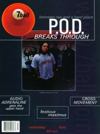

CMnexus
: Contemporary Christian culture, music, and media.
|
7ballNov / Dec 1999, #27
| Cover |
|---|
|  | | Writers in this Issue |
|---|
Alexander, Melody
Bandoppler, Treble
Bartenhagen, Marcia
Brown, Todd
Giles, Keith
Jenison, David A.
Keyes, J. Edward
Martin, Rachel L
Metzler, Stu
Stauffer, Tia
VanArendonk, Nancy
Well, Chris
|
Cover Feature:
- "R.E.S.P.E.C.T." by David A. Jenison
Article:
- "An Old Dog's New Hits" by Marcia Bartenhagen
- "Order In The Court" by Marcia Bartenhagen
Featurette:
- "Hey, Whatever Happened to those guys?"
Bankshots:Spotlight:Album Review:blah, blah, blah: "Building a Bigger Story" by Chris Well
This issue of 7ball came bundled with GAS #16. |
|
<>